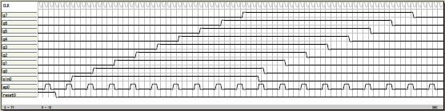
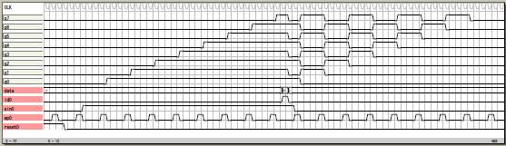

シフトレジスタ
その1
8ビットのシフトレジスタです。
epが1のときにシフトレジスタを駆動しています。
file: sample16

論理譜
logicname yahoo19
entity main
input reset;
input ep;
input sin;
output q[8];
bitr shift[8];
if (reset)
shift=0;
else
if (ep)
shift.0=sin;
shift.1:7=shift.0:6;
else
shift=shift;
endif
endif
q=shift;
ende
entity sim
output reset;
output ep;
output sin;
output q[8];
bitr tc[8];
part main(reset,ep,sin,q)
tc=tc+1;
if (tc<5) reset=1; endif
if (tc.0:1==3) ep=1; endif
if ((tc>7)&(tc<43)) sin=1; endif
ende
endlogic
その2
並列代入を付けたシフトレジスタです。
ldが1のときにdataをqに代入して記憶します。
file: sample17

論理譜
logicname yahoo20
entity main
input reset;
input ep;
input sin;
input ld;
input data[8];
output q[8];
bitr shift[8];
if (reset)
shift=0;
else
if (ld)
shift=data;
else
if (ep)
shift.0=sin;
shift.1:7=shift.0:6;
else
shift=shift;
endif
endif
endif
q=shift;
ende
entity sim
output reset;
output ep;
output sin;
output q[8];
output ld;
output data[8];
bitr tc[8];
part main(reset,ep,sin,ld,data,q)
tc=tc+1;
if (tc<5) reset=1; endif
if (tc.0:1==3) ep=1; endif
if ((tc>7)&(tc<43)) sin=1; endif
if (tc==41) ld=1; data=0x55; endif
ende
endlogic
|